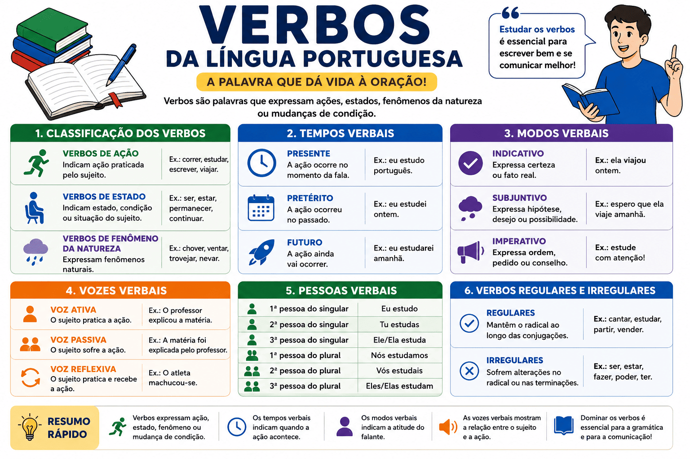

Verbos da língua portuguesa: conjugação, tempos, modos e vozes
Os verbos podem expressar ações, estados, acontecimentos e processos. Suas formas ajudam a situar o que se diz no tempo e a apresentar possibilidades, condições, pedidos e diferentes perspectivas sobre os fatos.
Estudar verbos envolve mais do que memorizar conjugações. É necessário compreender como eles se relacionam com o sujeito, os complementos e o contexto de comunicação.

O que são verbos?
O verbo é uma classe de palavras caracterizada por suas possibilidades de conjugação e por sua participação na organização da oração.
- Ação: “A estudante escreveu o texto.”
- Estado: “A estudante estava tranquila.”
- Mudança: “A situação melhorou.”
- Processo: “A planta cresceu.”
- Acontecimento meteorológico: “Choveu ontem.”
O significado, sozinho, não identifica essa classe. “Construção” e “viagem” podem nomear ações, mas são substantivos. “Construir” e “viajar” são verbos.
Observe a forma e a estrutura: palavras como “viajo”, “viajamos” e “viajariam” pertencem ao paradigma de conjugação de “viajar”.
Verbo, oração e predicado
O verbo participa da estrutura da oração e das relações entre seus termos. Em um predicado verbal, o núcleo é um verbo significativo.
“Os estudantes leram o conto.”
- Sujeito: os estudantes;
- Predicado verbal: leram o conto;
- Núcleo do predicado: leram;
- Objeto direto: o conto.
Em um predicado nominal, o núcleo é o predicativo, e o verbo de ligação articula a atribuição de uma propriedade ao sujeito.
“Os estudantes estavam atentos.”
“Estavam” é verbo de ligação; “atentos” é predicativo do sujeito e núcleo do predicado nominal.
Portanto, não é adequado afirmar que o verbo seja sempre o único núcleo ou a informação principal de qualquer predicado.
Estrutura dos verbos
A análise morfológica pode distinguir radical, vogal temática e desinências.
Exemplo: “cantávamos”
- Cant-: radical;
- -a-: vogal temática;
- -va-: desinência modo-temporal;
- -mos: desinência número-pessoal.
A terminação “-va-” participa da identificação do pretérito imperfeito do indicativo, enquanto “-mos” indica a primeira pessoa do plural.
As três conjugações verbais
Os verbos são agrupados em três conjugações, tradicionalmente identificadas pelas terminações do infinitivo.
| Conjugação | Terminação | Exemplos |
|---|---|---|
| Primeira | -ar | Cantar, estudar, viajar. |
| Segunda | -er | Vender, aprender, conhecer. |
| Terceira | -ir | Partir, dividir, permitir. |
“Pôr” e seus derivados pertencem à segunda conjugação, apesar da terminação atual do infinitivo.
Pessoa e número
As formas verbais podem apresentar marcas de pessoa e número relacionadas à concordância.
| Pessoa gramatical | Exemplo |
|---|---|
| 1ª do singular | Eu estudo. |
| 2ª do singular | Tu estudas. |
| 3ª do singular | Ele/ela estuda. |
| 1ª do plural | Nós estudamos. |
| 2ª do plural | Vós estudais. |
| 3ª do plural | Eles/elas estudam. |
“Você” se dirige ao interlocutor, mas se combina normalmente com formas de terceira pessoa: “você estuda”. Na concordância prescrita pela norma-padrão, usa-se “a gente estuda”.
Pessoa verbal não equivale necessariamente a “quem pratica a ação”. Em “nós estamos cansados”, não há uma ação praticada pelo sujeito.
Modos verbais
Os modos participam da maneira como o enunciado apresenta uma situação. Na classificação tradicional, estudam-se indicativo, subjuntivo e imperativo.
Indicativo
É frequente em afirmações, descrições e relatos apresentados como informações assumidas pelo enunciador.
“A turma entregou os trabalhos.”
Isso não significa que o indicativo comprove a verdade da afirmação. Uma informação falsa também pode ser formulada nesse modo.
Subjuntivo
Aparece em construções de desejo, condição, possibilidade, avaliação e dependência sintática.
- “Espero que ela participe.”
- “Se ela participasse, contribuiria.”
- “Quando ela participar, avise-me.”
O subjuntivo não indica obrigatoriamente dúvida. Em “Lamento que ele esteja doente”, o falante pode considerar a doença um fato.
Imperativo
É empregado para orientar a conduta do interlocutor, expressando pedido, conselho, convite, instrução ou ordem.
- Pedido: “Leia este trecho, por favor.”
- Conselho: “Revise o texto com calma.”
- Instrução: “Marque uma alternativa.”
- Proibição: “Não interrompa a leitura.”
A força do enunciado depende da situação e das relações entre os interlocutores. A forma imperativa, sozinha, não determina que haja autoritarismo.
Tempos do indicativo
As denominações temporais orientam a análise, mas os usos não correspondem mecanicamente a passado, presente e futuro cronológicos.
| Tempo | Exemplo | Leitura frequente |
|---|---|---|
| Presente | Eu estudo. | Situação atual, hábito ou generalização. |
| Pretérito perfeito | Eu estudei. | Acontecimento apresentado como delimitado no passado. |
| Pretérito imperfeito | Eu estudava. | Situação habitual ou em desenvolvimento no passado. |
| Pretérito mais-que-perfeito | Eu estudara. | Acontecimento anterior a outro ponto passado. |
| Futuro do presente | Eu estudarei. | Projeção posterior ao momento de referência presente. |
| Futuro do pretérito | Eu estudaria. | Projeção a partir de um ponto passado ou situação condicionada. |
Presente com referência futura ou narrativa
- “Amanhã viajo cedo.” — a forma presente tem referência futura.
- “Em 1822, o Brasil declara sua independência.” — o presente pode apresentar um acontecimento histórico, aproximando-o da cena narrada.
Futuro com valor de hipótese ou cortesia
- “Onde estará a chave?” — pode indicar uma conjectura sobre o presente.
- “Você poderia explicar novamente?” — o futuro do pretérito contribui para um pedido cortês.
Tempos do subjuntivo
| Tempo | Exemplo contextualizado |
|---|---|
| Presente | Espero que ela estude. |
| Pretérito imperfeito | Se ela estudasse, compreenderia melhor. |
| Futuro | Quando ela estudar o capítulo, fará a atividade. |
Futuro do subjuntivo não é sempre igual ao infinitivo
Em “quando eu estudar”, as formas coincidem. Com verbos irregulares, a diferença fica evidente: quando eu fizer, quando eu tiver, quando eu vier.
Tempos simples e compostos
O tempo simples é expresso por uma forma verbal, como “estudei”. Os tempos compostos são formados com ter ou haver + particípio, como “tinha estudado”.
| Construção | Classificação | Exemplo |
|---|---|---|
| Tenho estudado | Pretérito perfeito composto do indicativo. | Tenho estudado todos os dias. |
| Tinha estudado | Pretérito mais-que-perfeito composto do indicativo. | Quando a aula começou, eu já tinha estudado o capítulo. |
| Terei concluído | Futuro do presente composto do indicativo. | Até sexta-feira, terei concluído o trabalho. |
| Tenha concluído | Pretérito perfeito composto do subjuntivo. | Espero que ela tenha concluído o trabalho. |
No português brasileiro, “tenho estudado” costuma expressar repetição ou continuidade em um intervalo que alcança o presente. Não equivale simplesmente a “estudei”.
Aspecto verbal
O tempo situa o acontecimento em relação a um ponto de referência. O aspecto apresenta seu desenvolvimento: como delimitado, em curso, habitual, iniciado ou concluído.
Acontecimento delimitado
“Ontem, li o conto.”
Acontecimento em desenvolvimento
“Eu lia o conto quando o telefone tocou.”
- Começou a ler: destaca o início;
- Estava lendo: destaca o desenvolvimento;
- Continuou a ler: destaca a continuidade;
- Terminou de ler: destaca a conclusão.
Formas nominais dos verbos
As formas nominais são infinitivo, gerúndio e particípio. Podem integrar construções verbais ou apresentar empregos próximos aos de outras classes.
Infinitivo
É a forma utilizada para nomear o verbo: “estudar”, “vender”, “partir”.
- Emprego substantivo: “Estudar exige dedicação.”
- Em locução: “Vou estudar.”
Infinitivo pessoal
O infinitivo pode apresentar marcas de pessoa e número em determinadas construções.
“Organizei os materiais para estudarmos juntos.”
“Estudarmos” identifica a primeira pessoa do plural.
A flexão não deve ser aplicada automaticamente a qualquer sequência de verbos. Na construção modal, emprega-se “eles precisam estudar”, sem flexionar o infinitivo principal.
Gerúndio
Apresenta formas como “estudando”, “vendendo” e “partindo”. Seu valor depende da construção.
- “Ela está lendo.” — desenvolvimento de uma atividade.
- “Estudando com regularidade, você poderá avançar.” — pode estabelecer uma condição.
O gerúndio não é um erro. A revisão deve avaliar se a construção expressa adequadamente a relação pretendida.
Particípio
Aparece em tempos compostos, construções passivas e empregos adjetivos.
- Tempo composto: “Ela tinha concluído o texto.”
- Passiva: “As tarefas foram concluídas.”
- Emprego adjetivo: “As tarefas concluídas foram arquivadas.”
Com “ter” ou “haver” nos tempos compostos, o particípio permanece invariável: “elas tinham concluído”. Na passiva com “ser”, concorda com o sujeito: “as tarefas foram concluídas”.
Locuções verbais e auxiliares
Uma locução verbal reúne formas verbais que constituem uma unidade de predicação. Auxiliares podem acrescentar informações de tempo, aspecto, modalidade ou voz.
- Vou estudar: projeção futura;
- Estou estudando: desenvolvimento;
- Tinha estudado: anterioridade;
- Foi corrigido: construção passiva.
Não basta contar verbos próximos. Em “Ela afirmou que estudaria”, há duas orações, e não uma única locução.
A condição de auxiliar depende do emprego. Compare “tenho estudado”, em que “ter” é auxiliar, com “tenho dois livros”, em que possui sentido lexical.
Transitividade verbal e verbos de ligação
A análise da transitividade considera a relação entre o verbo e seus complementos na construção.
| Classificação | Exemplo | Análise |
|---|---|---|
| Transitivo direto | Ana comprou um livro. | “Um livro” é objeto direto. |
| Transitivo indireto | Ana gosta de literatura. | “De literatura” é objeto indireto. |
| Transitivo direto e indireto | Ana entregou o livro ao colega. | Há objeto direto e objeto indireto. |
| Intransitivo | O bebê dormiu. | Não há objeto na construção. |
| De ligação | Ana está tranquila. | Articula a atribuição do estado expresso pelo predicativo. |
A classificação não deve ser tratada como uma propriedade imutável de cada palavra. Compare “Ana anda preocupada”, com “andar” em emprego de ligação, e “Ana anda pelo parque”, com sentido de deslocamento.
Vozes verbais
O estudo das vozes envolve a organização da relação entre sujeito, predicação e participantes do acontecimento.
Voz ativa
“A professora corrigiu as provas.”
Nesse exemplo, o sujeito é agente. Entretanto, nem toda construção ativa possui sujeito que realiza uma ação: em “Ana recebeu uma carta”, o sujeito tem papel de destinatário.
Voz passiva analítica
“As provas foram corrigidas pela professora.”
A construção apresenta “ser + particípio”. “As provas” é sujeito paciente, e “pela professora” é agente da passiva.
Voz passiva sintética
“Vendem-se livros.”
Na análise normativa tradicional, “se” é partícula apassivadora, e “livros” é sujeito paciente. A concordância é feita no plural.
Valor reflexivo e valor recíproco
- Reflexivo: “Ana penteou-se.” A ação se volta para o próprio sujeito.
- Recíproco: “Os colegas abraçaram-se uns aos outros.” Há uma relação mútua.
Nem toda ocorrência de “se” indica reflexividade. Em “Precisa-se de funcionários”, a análise normativa identifica sujeito indeterminado, e o verbo permanece no singular.
Verbos regulares, irregulares e anômalos
Regulares
Seguem o paradigma de sua conjugação: canto, cantava, cantarei. A regularidade envolve o radical e as terminações, consideradas as regras de formação.
Ajustes ortográficos para preservar sons não representam necessariamente irregularidade: “ficar → fiquei”.
Irregulares
Apresentam alterações em relação ao paradigma regular, no radical ou nas terminações.
- Fazer: faço, fiz, farei;
- Poder: posso, pude;
- Trazer: trago, trouxe.
Anômalos
Na classificação tradicional, “ser” e “ir” são exemplos de verbos anômalos, com alterações acentuadas em suas formas: sou, era, fui; vou, ia, fui.
Verbos abundantes e defectivos
Abundantes
Apresentam mais de uma forma de igual valor gramatical em alguma parte do paradigma. Na abordagem escolar, destacam-se os particípios duplos.
- Aceitar: aceitado / aceito;
- Entregar: entregado / entregue;
- Salvar: salvado / salvo.
A orientação tradicional frequentemente associa o particípio regular a “ter/haver” e o irregular a “ser/estar”. Os usos, porém, variam conforme o verbo; não se deve transformar essa orientação em uma regra absoluta para todos os casos.
Defectivos
São descritos como verbos com lacunas em determinadas formas do paradigma. “Reaver” é um exemplo frequente na tradição gramatical.
A classificação de alguns verbos pode variar entre descrições e ao longo do tempo. Para formas menos usuais, consulte uma gramática ou um dicionário de conjugação.
Verbos impessoais e unipessoais
Empregos impessoais
Formam orações sem sujeito. Nos casos abaixo, empregam-se na terceira pessoa do singular na norma-padrão.
- Fenômeno meteorológico: “Choveu ontem.”
- Haver com sentido de existir: “Há livros na mesa.”
- Fazer indicando tempo decorrido: “Faz dois anos que estudo aqui.”
A impessoalidade se mantém no auxiliar: “Deve haver alternativas”. Já “existir” concorda com seu sujeito: “Existem alternativas”.
Empregos unipessoais
São associados a verbos usados habitualmente na terceira pessoa, mas que possuem sujeito e podem apresentar singular ou plural.
- “O cachorro latiu.”
- “Os cachorros latiram.”
Esses limites dizem respeito aos usos habituais. Em personificações ou empregos figurados, podem aparecer outras pessoas ou construções.
Não confunda as categorias
Em “choveu ontem”, não há sujeito. Em “os cachorros latiram”, há sujeito plural. A semelhança de pessoa verbal não elimina essa diferença sintática.
Erros comuns envolvendo verbos
| Forma inadequada no contexto | Forma adequada | Explicação |
|---|---|---|
| Os estudantes chegou. | Os estudantes chegaram. | Concordância com o sujeito plural. |
| Houveram problemas. | Houve problemas. | “Haver” com sentido de existir é impessoal. |
| Fazem dois anos que estudo aqui. | Faz dois anos que estudo aqui. | “Fazer” indicando tempo decorrido é impessoal. |
| Quando eu fazer a atividade... | Quando eu fizer a atividade... | Futuro do subjuntivo de “fazer”. |
| Eles precisam estudarem. | Eles precisam estudar. | Infinitivo principal não flexionado nessa construção modal. |
| Elas tinham concluídas as tarefas. | Elas tinham concluído as tarefas. | Particípio invariável no tempo composto. |
Verbos e interpretação
Em questões de leitura, identifique não apenas o nome do tempo, mas o efeito produzido: hábito, hipótese, cortesia, conselho, anterioridade ou desenvolvimento de um processo.
Em uma transformação para a passiva, observe também o foco informacional e a eventual omissão do agente.
Resumo sobre verbos
- Podem expressar ações, estados, processos e acontecimentos.
- Apresentam formas relacionadas a pessoa, número, tempo e modo.
- O aspecto indica como o desenvolvimento do acontecimento é apresentado.
- As conjugações tradicionais são a primeira, a segunda e a terceira.
- Os modos são indicativo, subjuntivo e imperativo.
- As formas nominais são infinitivo, gerúndio e particípio.
- Locuções articulam auxiliares e verbo principal.
- Transitividade e função de ligação dependem da construção.
- Impessoalidade não é o mesmo que uso unipessoal.
- O contexto é necessário para interpretar tempos e modos.
Quiz sobre verbos
Selecione uma alternativa por questão e clique em “Verificar respostas”.
Questão 1 — Conjugação
Qual alternativa apresenta um verbo de segunda conjugação?
Questão 2 — Tempo e contexto
Em “Amanhã viajo cedo”, a forma “viajo” está no presente do indicativo e:
Questão 3 — Subjuntivo
Qual construção atende à norma-padrão?
Questão 4 — Aspecto
Em “Eu lia o conto quando o telefone tocou”, “lia” apresenta a leitura:
Questão 5 — Voz passiva
Qual é a transformação passiva de “A professora corrigiu as provas”?
Questão 6 — Impessoalidade
Qual construção atende à norma-padrão, considerando “haver” com sentido de existir?
Questão 7 — Tempo composto
Qual frase emprega adequadamente o particípio com o auxiliar “ter”?
Questão 8 — Verbo de ligação
Em qual alternativa “andar” apresenta emprego de ligação?
Conclusão
Os verbos organizam relações importantes na oração e no texto. Suas formas permitem apresentar acontecimentos, construir hipóteses, situar processos e dirigir pedidos ao interlocutor.
Para analisá-los, combine o reconhecimento das formas com a observação da estrutura e do contexto. Essa prática evita regras simplificadas e ajuda a explicar os efeitos de sentido das escolhas verbais.
Perguntas frequentes sobre verbos
O que são verbos?
Verbos são palavras que podem expressar ações, estados, acontecimentos e processos. Suas formas participam da indicação de pessoa, número, tempo, modo e aspecto.
Quais são os modos verbais?
Na classificação escolar tradicional, os modos são indicativo, subjuntivo e imperativo.
Quais são as formas nominais do verbo?
As formas nominais são infinitivo, gerúndio e particípio.
Todo verbo tem sujeito?
Não. Empregos impessoais formam orações sem sujeito, como “Choveu ontem” e “Há livros na mesa”.
Qual é a diferença entre tempo e aspecto verbal?
O tempo situa o acontecimento em relação a um ponto de referência. O aspecto apresenta seu desenvolvimento, por exemplo, como concluído, em curso ou habitual.
O presente sempre se refere ao momento da fala?
Não. Pode expressar hábitos, generalizações, acontecimentos narrados e situações futuras, conforme o contexto.
Como reconhecer uma locução verbal?
É necessário verificar se as formas verbais constituem uma unidade de predicação, com auxiliar ou auxiliares e um verbo principal, como em “estava estudando”.
Continue estudando Língua Portuguesa
Referências para aprofundamento
- BECHARA, Evanildo. Moderna gramática portuguesa. Consulte as seções sobre verbos, conjugação e estrutura da oração.
- CUNHA, Celso; CINTRA, Lindley. Nova gramática do português contemporâneo. Consulte o capítulo sobre verbos e seus empregos.
Explore outros conteúdos
Continue seus estudos acessando outras seções do site Mestre Kira: